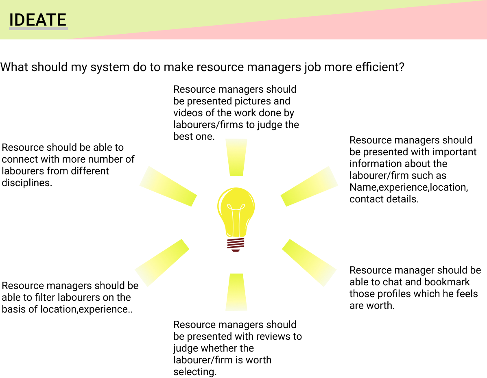
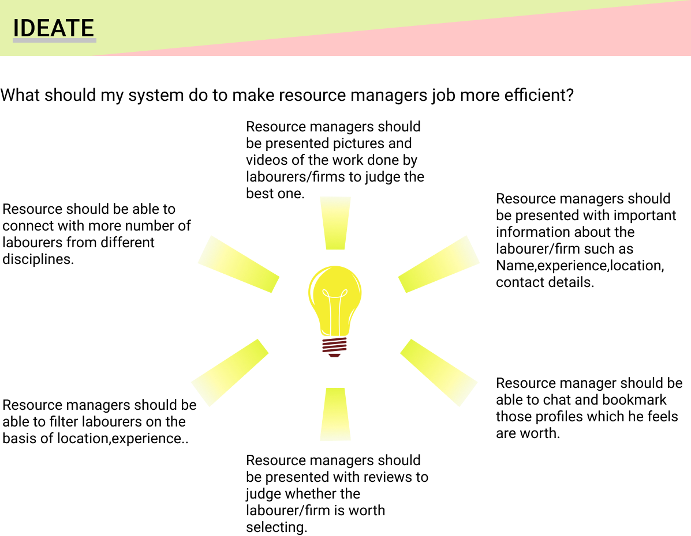

An app that helps resource managers in the construction industry to easily
hire labourers from different disciplines and search jobs for them.
Few of my close relatives are Civil engineers.I have seen them being frustrated on hiring labourers and
struggling to finish the work with in deadline.I have seen few civil engineers near my home facing similar problems.
"I thought of researching on this problem.."


I have curated my findings in the Customer journey map.
“I loosed my contract because I was not able to hire labourers[mostly masons] to finish the work on time..”
“Sometimes I feel very tough to get new contract”
- Civil engineer
Curating my findings this way helped me to get a better view of the problem
brand think about potential opportunities to solve.

I used personas to clearly demonstrate my users motivations,goals,expectations and frustrations.
 

“My system will not only benefit resource managers but also the labourers.It would help them in getting a job easily”
Purpose of my app is to connect resource managers and labourers.The common artifact used by them are Yellow helmet and orange Jacket.

At this phase I iterated on content architecture,tried different ways of representation.
I tried my best to make the system adhere to usability heuristics.
I tested this with users.Testing helped me :
To understand the usability of my system with only content.
In getting useful reviews about content architecture.


This is the high prototype of the system after few iterations on shades of color.